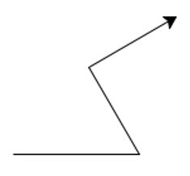
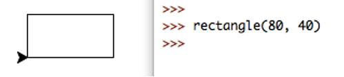
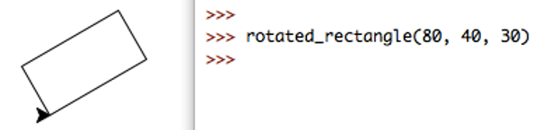
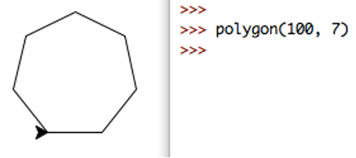
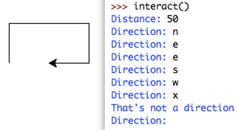
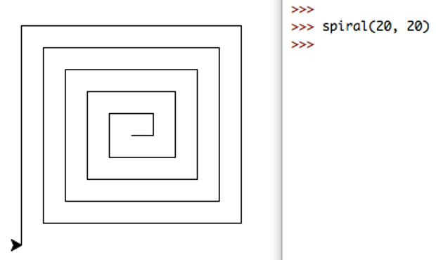

Convert the leap year program you wrote in week 2 to a function. The function should take a single integer parameter representing a year (e.g. 2018), and return: True if the year is a leap year, and False if not.
Write a docstring comment for your function that explains how it is to be used.
As a reminder, a leap year occurs when the year is a multiple of four, unless the year is a multiple of 100. However, if the year is a multiple of 400, then it is a leap year. For instance, 2016 and 2000 are leap years, but 2100 is not.
In this task, we will use the turtle graphics module for drawing basic shapes, by moving a ‘turtle’ across the screen, drawing a path as it travels. We can use the turtle functionality if we put the line import turtle at the top of our file. The turtle module contains many functions, we will use the following:
turtle.forward(distance) moves the turtle forward by a given distance.turtle.back(distance) moves the turtle backwards.turtle.left(angle) turns the turtle left by angle degrees.turtle.right(angle) turns the turtle right.turtle.setheading(angle) sets the turtle’s direction in degrees (0 is east, 90 is north, 180 is west, 270 is south).turtle.reset() removes all drawings and moves the turtle back to its original position and orientation.turtle.exitonclick() sets the window to close when clicked.turtle.bye() closes the window. Clicking the close icon on the window may not work.Note: See https://docs.python.org/3.6/library/turtle.html for a more complete description of the turtle module.
The turtle begins facing ‘east’ (i.e. to the right). For example, the following code produces the image below.
import turtle
def demo() :
"""Turtle demo."""
turtle.forward(100)
turtle.left(120)
turtle.forward(80)
turtle.right(90)
turtle.forward(80)
turtle.exitonclick()
if __name__ == "__main__" :
demo()

Create a file which contains the following functions. NOTE:
import turtle at the top of your code.turtle.py, this will cause the import to fail. Choose a different file name, but make sure you add the .py. If you do save your file as turtle.py, you must delete or rename your file.turtle.exitonclick() after drawing, either by putting at the end of your main function or manually running it through IDLE (otherwise, the turtle window will crash when running in IDLE).rectangle(width, height), which draws a rectangle with the given side lengths. Ensure that the cursor finishes pointing east.

rotated_rectangle(width, height, angle), which draws a rectangle rotated anticlockwise by the given angle. Ensure that the cursor finishes pointing east.

Hint: This can be done in only four lines of code, including the def ..., and not including the function comment.
polygon(radius, num_sides), which draws a regular polygon with n sides, and side length radius * sin(π / num_sides).

Hint: If the turtle moves anti-clockwise, it will turn a total of 360°, in n equal movements. The math module contains trigonometric functions and mathematical constants. Remember to import math.
interact(), which first asks the user for a distance, then repeatedly asks for a direction to move, from the options n/s/e/w (north/south/east/west respectively), and then moves in that direction by the given distance. If the user enters q, the turtle window closes and the function ends. If the user enters any other input, an error message is printed, as in the example.

Challenge: Square Spirals
Write a function spiral(num_lines, step_size), which draws a square spiral with num_lines lines, which starting from the centre have length s, s, 2s, 2s, 3s, 3s, …, where s = step_size (note that this is also the distance between two adjacent parallel lines). The example below shows a spiral of 20 lines, which makes five full revolutions, with a step size of 20.
